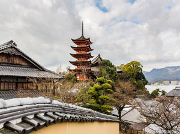
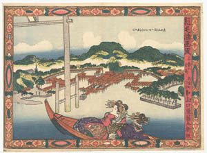
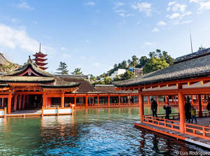
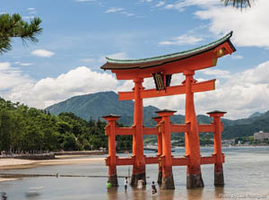

Toda la informacion que necesitas
Descubriendo Miyashima
Miyashima (宮島) es una preciosa isla situada a las afueras de la ciudad de Hiroshima, en la región de Chugoku. Y aunque tiene mucho que ver, es conocida especialmente por el impresionante torii flotante del santuario de Itsukushima . Por su belleza natural, Miyashima fue declarada Patrimonio de la Humanidad por la UNESCO en 1996.
La isla
Los japoneses consideran las vistas de esta isla uno de los tres paisajes más bellos de todo Japón. De hecho, el santuario es tan importante que la isla ha pasado a llamarse popularmente «isla del santuario» (que es la traducción de Miyashima).
Historia
La isla de Itsukushima tuvo una destacada importancia comercial debido a su posición en el mar interior de Japón. En el período Muromachi fue construido un mercado, a raíz del cual se empezó a desarrollar un área urbana. Se construyó un templo budista cerca de la cumbre del monte Misen, que también atraía a muchos peregrinos.
Conociendo El Santuario y La Gran puerta Torii
El Santuario Itsukushima (厳島神社 Itsukushima-jinja) es un santuario sintoísta situado en la isla de Itsukushima, cerca de la ciudad de Hatsukaichi, en la prefectura de Hiroshima, en Japón. Está construido sobre el agua. Fue inscrito en la lista del Patrimonio de la Humanidad de la UNESCO en el año 19961 y está protegido por severas leyes de conservación del patrimonio.
El Santuario está presidido por un Otorii, un gran pórtico de color bermellón que descansa sobre el fondo del mar, sin estar empotrado en la arena. Reconstruido en madera de alcanfor en 1875 (periodo Meiji), alcanza una altura de 16 m.
El Santuario Itsukushima-Jinja
En el Santuario Itsukushima, los edificios principales son el Honden (edificio principal y santuario), el Haiden (oratorio) y el Heiden (edificio de las ofrendas) alineados con el gran Torii. Enfrente está el Hirabutai (plataforma ceremonial), donde tienen lugar las danzas ceremoniales Kagura. Del Hirabutai parten dos corredores para el este y para el oeste, que se unen a los edificios secundarios del templo.
El Torii de Miyashima
El Torii de Miyashima el representante mas famoso de su clase con sus 16 metros de alto el gran torii de Itsukushima parece flotar sobre el agua en las horas de marea alta, mientras que cuando el océano se retira es accesible a pie para la multitud de visitantes